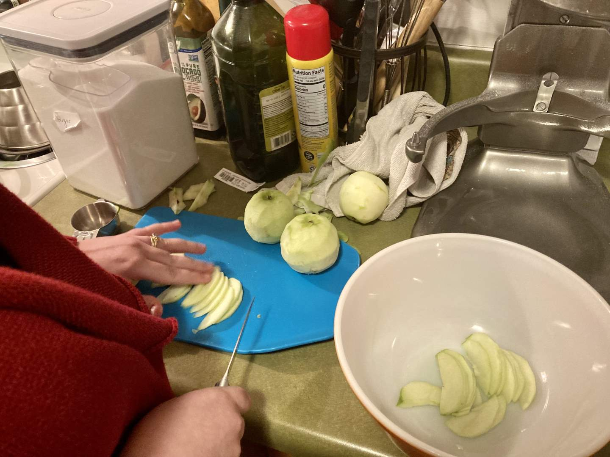
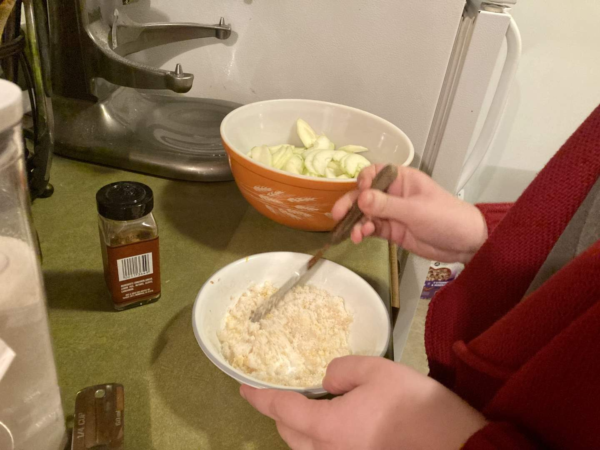
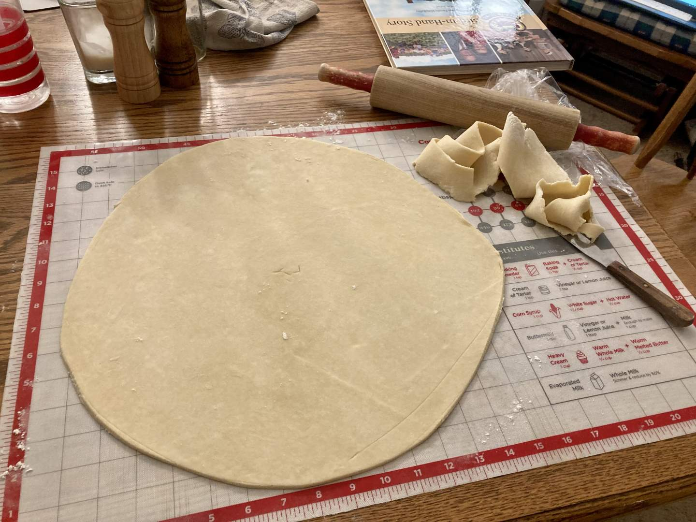
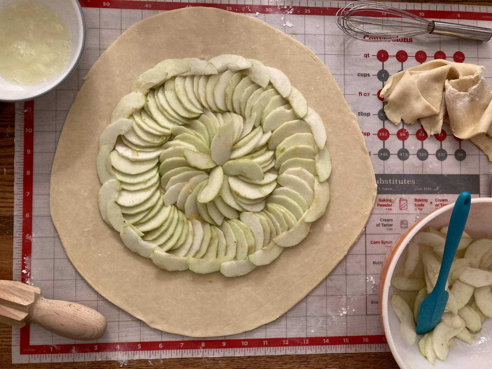
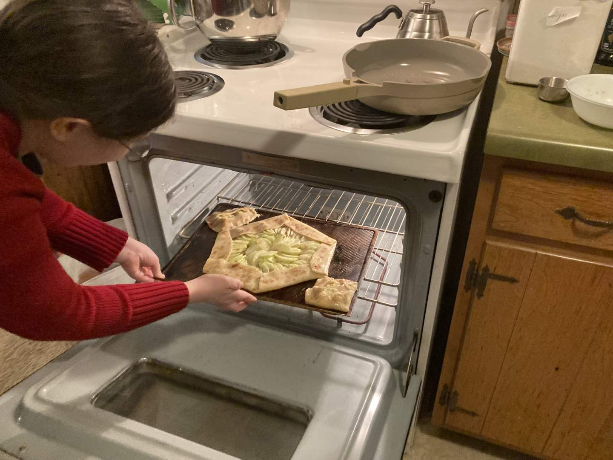
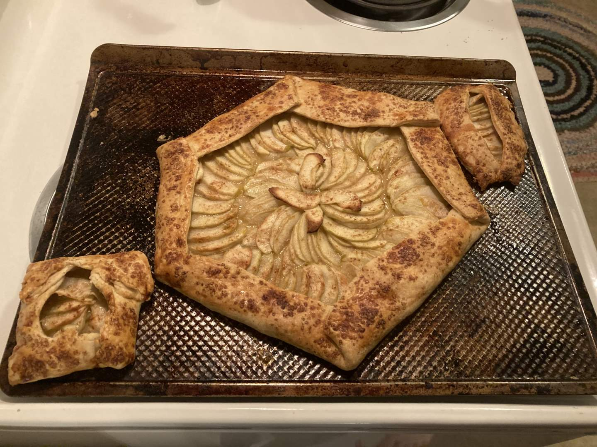
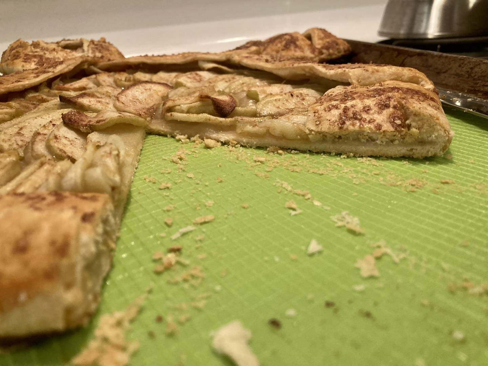

Pie 29: Tart Apple Tart
2024-01-07Recipe is from Food & Wine.
Taste:
Difficulty:
Vibes:
Suggested pairings: bread & soup
We rarely bake pies two days in a row, but some weeks call for extra pies, especially when delicious ingredients are on hand. Ben loves granny smith apples and had suggested we acquire some to supplement our mostly pasta-based diet (joke). Conveniently, apples are a versatile pie ingredient. It was inevitable that a few of the fruits purchased would find their way into a pie dish. In this case, we decided to skip the dish and make a free-form pie similar to the Cherry-Berry Tart we made in July.
Whenever possible, I like to leave the skin on vegetables and fruits (for increased nutrients and convenience), so I was disappointed when Ben said that the recipe called for peeled apples. After struggling to peel the first one, I recruited Ben to peel three more apples so I could focus on the more enjoyable job of thinly slicing the naked pomes. I have been working on my knife techniques, but the odd shapes of apples continue to thwart me when I attempt to slice them evenly. My slices were regrettably inconsistent in thickness and cleanness, but this did not detract from the overall performance of the apples as a filling. I tossed the apple slices with lemon juice, sugar, and some High-Quality pumpkin pie spice.
Meanwhile, Ben prepared the crust. We opted to use the crust recipe included in the recipe instead of our favorite one, which resulted in a dough that was stronger but not as flavorful. He rolled it out to a diameter of 18 inches, which left space to fold over the crust. He carefully marked the guide points three inches away from the edge of the crust so that we could begin constructing the outer ring.
 It was a little awkward to work around each other as we attempted to place apple slices delicately and precisely on top of previous ones. Once the outer ring was completed, we began the inner ring with the apple slice facing the opposite direction to add more visual interest. We had many apple slices left after both rings were finished, so we crammed some more apples into the rings and added slices anywhere there seemed to be a gap. Ben then carefully folded the crust over the apples, one-sixth at a time, while I added extra syrup that had been left behind. He used egg wash to secure the folds in the crust, we sprinkled it with cinnamon sugar, and let it bake for 45 minutes. I thought for sure that the pie would bake more quickly since it was thin, but it needed every bit of that time.
Once the crust had hardened and the apples had softened, we removed the pie to cool. The crust was firm enough that the pie could be eaten like a pizza, which was very convenient; we did not have to dirty any extra dishes! There was just enough lemon flavor to complement the natural tartness of the granny smith apples without overwhelming them. At the edges of the pie, the folded-over crust almost had a pastry dough appearance, as the folding had created layers. Every aspect of this pie was delicious and brought joy.
This pie earned extra vibe points for its beauty. Though it increased the difficulty, creating a spiral of apple slices greatly enhanced the aesthetic appeal of the pie. The hexagonal shape, the golden finish of the egg wash, and the cinnamon turbinado sugar on the crust also enhanced the appearance. This could be a contest-worthy pie as far as presentation is concerned, and the result makes me feel emboldened to pursue other forms of pie art.
